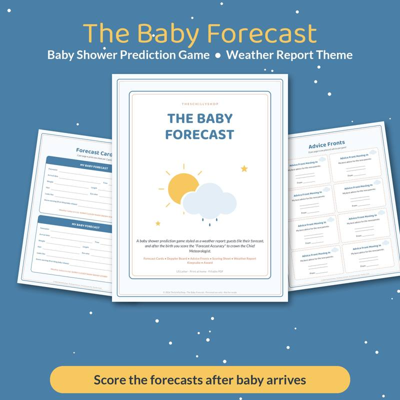

Baby Shower Prediction Game Ideas (and How to Run Them)
Prediction games are a baby shower favorite because everyone can play, nobody has to perform, and the results become a keepsake. Guests make their best guesses about the baby, and the parents get to compare the predictions once the baby arrives. Here are the best prediction game ideas and how to run them smoothly.
Why prediction games work
- They're quiet and low-pressure — guests play at their seats.
- They involve everyone, including guests who don't love party games.
- They create a keepsake the parents can revisit later.
- They keep people connected after the shower: guests look forward to hearing who "won."
Classic prediction questions
Most prediction cards include some combination of:
- Birth date — pick a day.
- Time of birth — morning, afternoon, evening or exact time.
- Weight — pounds and ounces.
- Length — in inches.
- Hair — color and amount.
- Eye color.
- Who the baby will look like — parent one, parent two, a grandparent.
- Sex — if not already known or announced.
Fun extra predictions
Mix in playful predictions:
- First word
- Future career
- Personality trait (adventurous, chill, dramatic)
- Who will change the first diaper
- Hours of labor
- Will the baby arrive early, on time or late?
- Favorite song
- Which parent's sleeping habits will the baby inherit?
Prediction game formats
Prediction cards
Each guest fills out a card. Cards are collected and saved for the parents. This is the simplest and most popular approach.
Birth date calendar
Print a calendar of the weeks around the due date. Guests write their name on a date. The closest guess wins.
Prediction pool
Like a sports pool: guests pay nothing (or a dollar to a college fund, if appropriate), and the closest guesses in each category win small prizes.
Themed prediction cards
A themed card makes the game feel special. A weather "forecast" theme works nicely: guests forecast the baby's "arrival conditions" — date, weight, length, hair, temperament — like a weather report. Our Baby Forecast shower prediction game uses that theme with printable forecast cards and a sign.
How to run the game
- Place cards and pens at each seat or at a station near the entrance.
- Announce the game early so guests fill out cards while mingling.
- Collect cards in a basket, box or keepsake envelope.
- Don't score at the shower — the answers aren't known yet. Save the cards for after the birth.
- After the birth, the parents (or the host) compare cards and announce winners via text or social post.
Scoring tips
- Give one point per correct answer, with partial points for close guesses.
- For birth date, use the closest date as the tiebreaker.
- For weight, closest without going over adds tension, but closest overall is simpler.
- Let the parents decide the scoring for subjective categories like "looks like."
Prize ideas
Because winners are announced after the birth, many hosts choose prizes that are easy to mail or send digitally:
- Gift cards
- A small candle or coffee
- A handwritten thank-you card with a photo of the baby
Turning predictions into a keepsake
- Collect cards in an album or a decorated box.
- Make a "prediction board" displaying all cards at the shower.
- Combine prediction cards with advice cards in one keepsake book.
- Scan cards and add them to the baby's first-year scrapbook.
Many families like to save shower cards alongside other milestone keepsakes — for example, a printable guest book filled out by visitors in the baby's first months.
Other low-key baby shower games
- Baby photo match: guests guess which guest is in each baby photo.
- Advice for parents: cards with tips (practical and silly).
- Wishes for baby: notes to read on a future birthday.
- Nursery rhyme fill-in: finish the rhyme.
- Diaper messages: guests write funny notes on diapers for late-night changes.
Virtual shower tips
- Send a fillable digital prediction card ahead of time.
- Collect answers through a form or email.
- Share results with all virtual guests after the birth.
Etiquette notes
- Ask the parents first. Some prefer not to have weight or labor predictions.
- If the sex or name is a surprise, avoid categories that might pressure them.
- Keep predictions kind — no jokes about the parents' sleep or appearance that might sting.
Prediction games are an easy, inclusive and sentimental way to involve every guest at a baby shower. Planning other showers this season? See our bridal shower games that aren't cringe.

A weather-themed baby shower prediction card and keepsake.
See it on Payhip
Shop the printables mentioned
Baby Forecast Shower Prediction Game
A weather-themed baby shower prediction card and keepsake.
View on Payhip
More guides
- Bridal Shower Games That Aren't Cringe
- Chili Cook-Off Rules and Scoring: A Complete Host Guide
- Christmas Party Games for Adults (No Supplies Needed)
- Cookie Exchange Party Ideas: How to Host a Christmas Cookie Swap
- A Family Chore System That Actually Works
- Galentine's Party Games Your Friends Will Actually Love
- The Meal Planning Game: How to Get Your Family to Help Plan Dinners
- New Year's Eve Family Traditions Kids Will Love
- Snow Day Activities for Kids: 30 Ideas Indoors and Out
- Teacher Gift Ideas From the Whole Class (Thoughtful and Budget-Friendly)
- Thanksgiving Kids Table Activities That Keep Them Busy
- Ugly Sweater Contest Ideas: Categories, Judging and Fun Twists
- Vacation Rental Cleaning Checklist: Room-by-Room Turnover Guide
- Valentine's Escape Room for Couples at Home: How to Set One Up